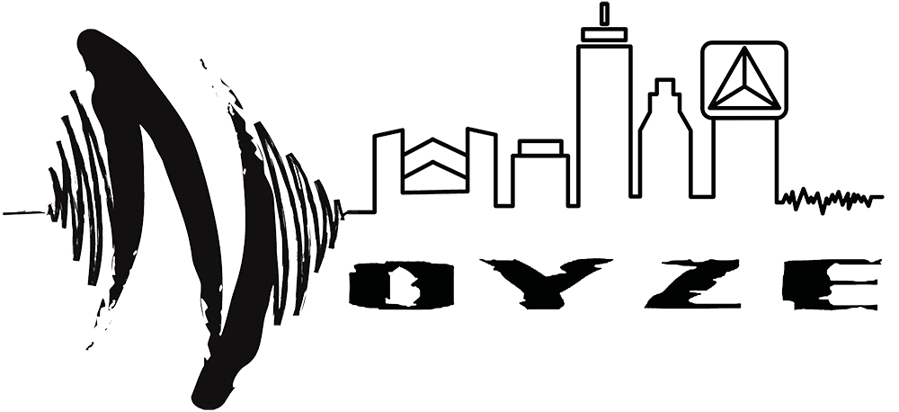
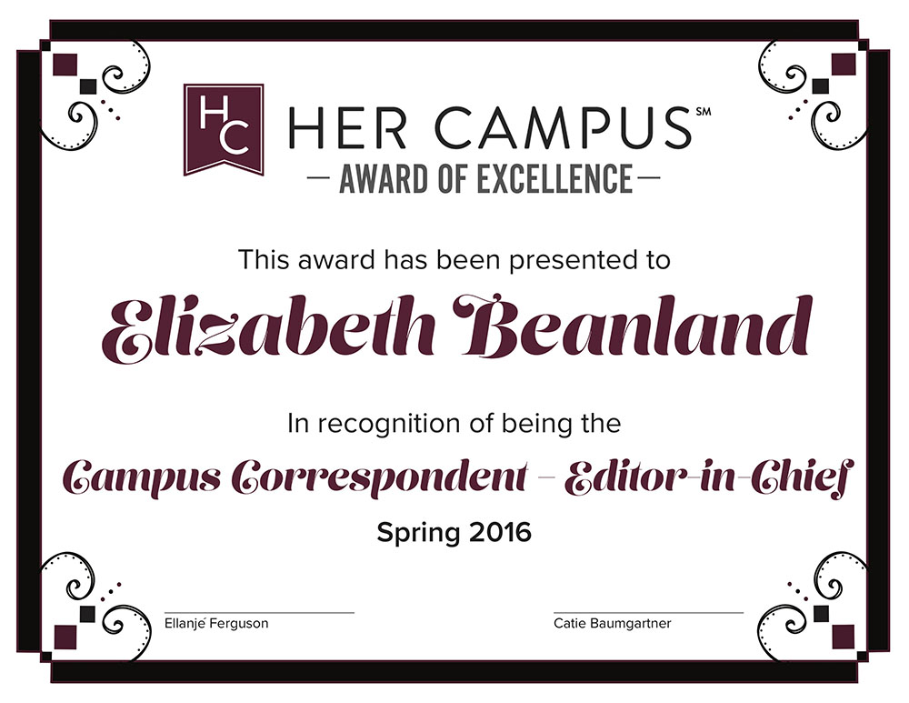

These are images of holiday cards that I designed for the Northeastern Advancement Holiday Card Contest. The object was to create a card that would be sent out to Alumni and University supporters. I came up with two clean designs that captured both the spirit of the holiday season as well as the spirit of Northeastern. 
This logo was made for Static Noyze Dance Company. They hosted a show at the Middle East nightclub in Boston and wanted to create a logo for it. They wanted the logo to incorporate the word "Noyze", which was the name of the show, music, and the Boston skyline. I drew a skyline in Illustrator and incorporated their already existing logo with sound waves.
These awards were made for the Umass Amherst chapter of the National Journalism group called Her Campus. The group needed awards for their end of the year ceremony to give out to the graduating seniors. The organiztion has brand guidelines such as font and color, so I stuck to those and created the patterns in Illustrator to make a clean, yet elegant design.
TOP OF PAGE